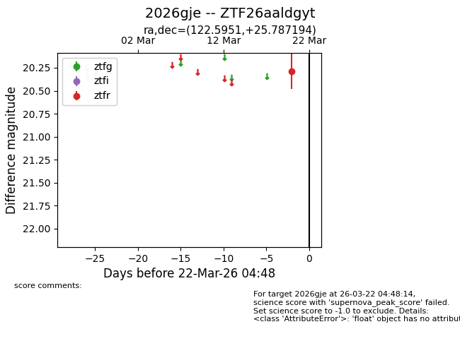
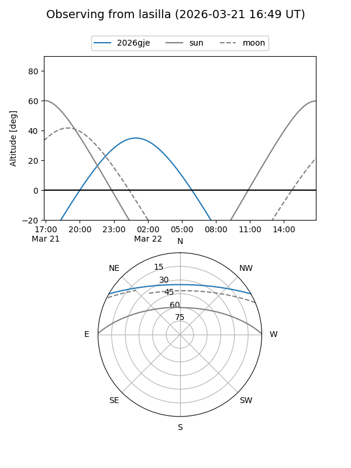
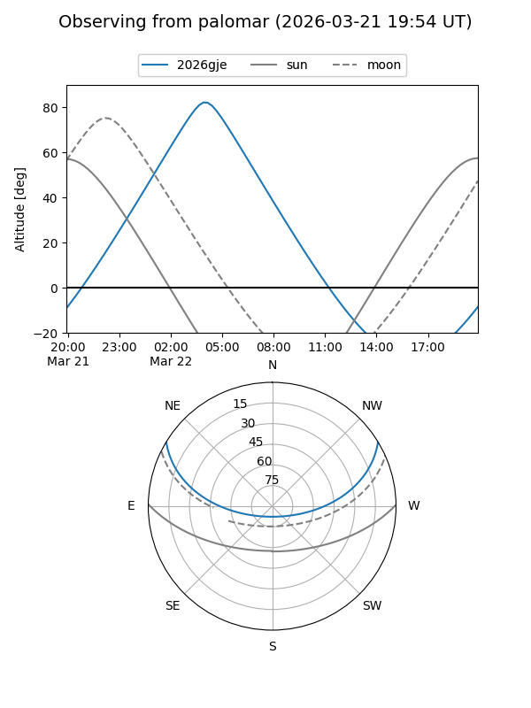

2026gje
Target 2026gje at 2026-03-22 04:50
Aliases and brokers:
FINK: link
Lasair: link
ALeRCE: link
TNS: link
YSE: link
alt names
ZTF26aaldgyt (ztf,fink_ztf)
2026gje (tns,yse)
Coordinates:
equatorial (ra, dec) = 122.5951,+25.78719
equatorial (HMS+DMS) = 08:10:22.82,+25:47:13.90
galactic (l, b) = (196.5887,+27.96745)
Flags:
Photometry:
last ztfr=20.29
1 ztfr detections
Lightcurve

Visibility


Additional plots